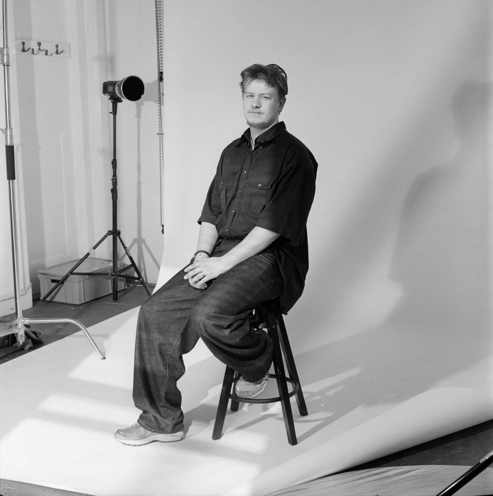

Luca van Ruiten
Fotograaf, Rotterdam.

Foto door Rik Versteeg
Fotografie is al zo lang ik me kan herinneren een deel van mijn leven. Als kind was ik geobsedeerd door camera's, videomontage en fotomanipulatie, alles wat me liet vastleggen en creëren. Die obsessie groeide uiteindelijk uit tot een serieuze praktijk. Ik houd net zoveel van de technische kant van fotografie als van de creatieve kant, wat verklaart waarom mijn werk zoveel vormen aanneemt, van studioportretten tot documentaire series tot editoriaal en modewerk. Toch keert mijn focus steeds terug naar hetzelfde onderwerp, en dat is de queer gemeenschap.
Als queer kunstenaar is mijn werk diep persoonlijk. Het is een eerbetoon aan mijn eigen reis en wereldbeeld. Opgroeien als queer persoon in een kleinere stad vormde de manier waarop ik dingen zie en gaf me een blijvende interesse in beeldtaal die verwachtingen uitdaagt. Fotografie werd mijn manier om vragen over identiteit, verbondenheid en zelfacceptatie te verwerken, en die zoektocht loopt nog steeds door alles wat ik vandaag maak.
Ik werk zowel digitaal als met analoge film, en heb ervaring in de doka. Analoge fotografie en belichting zijn de twee gebieden waar ik steeds naar terugkeer en die ik blijf verfijnen. Ik werk ook aan publicatieontwerp, wat me de kans geeft om vorm te geven aan hoe een verhaal op de pagina wordt gepresenteerd, en niet alleen hoe het wordt vastgelegd. Mijn missie als fotograaf is het documenteren en archiveren van de levendigheid en diversiteit binnen de Nederlandse queer gemeenschap. Op dit moment bouw ik dit archief op, stukje bij beetje.
Terwijl dit persoonlijke werk de kern vormt van wat ik doe, sta ik open voor commerciële samenwerkingen en breng ik dezelfde visie en zorgvuldigheid mee naar die projecten.